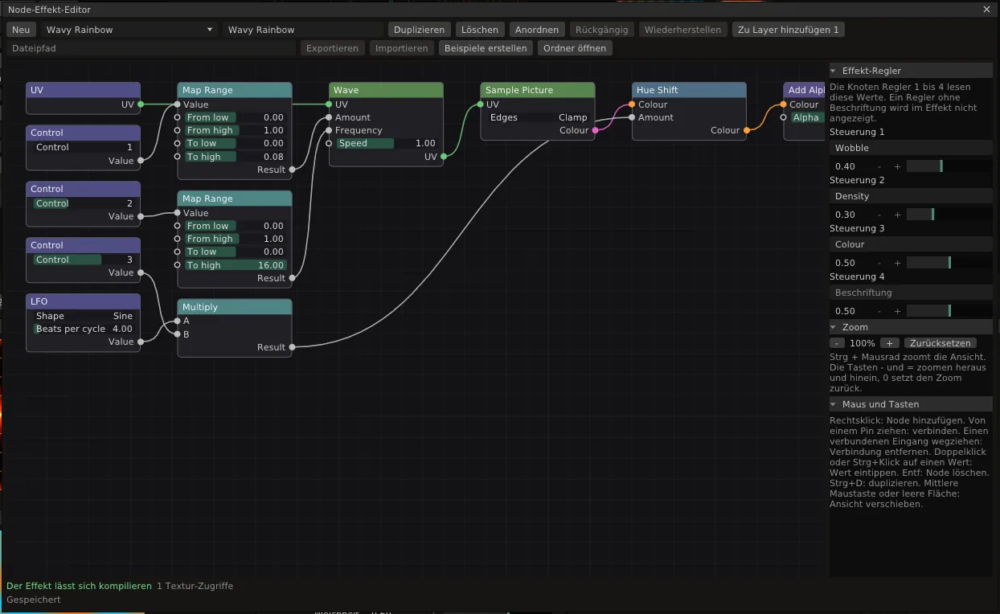

Inhalt
Erste Schritte
- Willkommen bei NyrexVJ
- Installation und erster Start
- Das Fenster im Überblick
- Deine erste Show in fünf Minuten
Visuals spielen
- Das Clip-Raster
- Decks und Übergänge
- Layer und Mischmodi
- Das Clip-Fenster
- Effekte
- Die Bibliothek
- Presets und Sitzungen
- Das Master-Fenster
Musik und Bewegung
Eigene Inhalte
- Video- und Bild-Clips
- Deine eigenen Shader
- 3D-Modelle
- Der Clip Creator
- Text, Partikel und Effektketten
- Der Node-Effekt-Editor
- Live-Quellen: Spout, NDI und Kameras
Ausgabe und Aufnahme
Live-Steuerung und Shows
- Steuerung: MIDI, OSC und die Webseite
- Show-Sync und Timecode
- Die Show-Zeitleiste
- Bühne: DMX, VRSL und VRChat
- Plugins
Nachschlagen und Hilfe
Handbuch / Eigene Inhalte
Der Node-Effekt-Editor
#Was er macht
Der Node-Editor baut deine eigenen Effekte ohne Code. Du verbindest Nodes für Bilder, Audio, Beats, LFOs, Mathe, Farbe, Verzerrung, Rauschen und Formen, und NyrexVJ macht aus dem Graphen einen einzigen Shader. Das Ergebnis ist ein normaler Effekt: Er steht in der Bibliothek als Node: Name, passt in jeden Slot eines Layers oder des Masters, hat bis zu vier Regler und kann die Makros, das Audio und den Beat lesen. Ein Node-Effekt kostet so viel wie derselbe Effekt von Hand geschrieben.
#Schnellstart
- Öffne den Editor über Creator, Node-Effekt-Editor, oder über Nodes bearbeiten unter einem Node-Effekt im Effekt-Rack.
- Drück Neu, oder Beispiele erstellen für vier fertige Effekte: Wavy Rainbow, Mirror Swirl, Kick Pulse und Trails.
- Klick mit rechts in den Graphen und such einen Node. Zieh von einem Ausgangs-Pin rechts an einem Node zu einem Eingangs-Pin links an einem anderen, um sie zu verbinden. Der Output-Node ist das Ende jedes Effekts.
- Der Effekt wird nach jeder Änderung einen Moment später gespeichert und neu gebaut. Die Statuszeile zeigt, ob er kompiliert, wie oft er das Bild liest und die Meldung auf dem Node, der falsch ist. Eine ungültige Änderung lässt den letzten guten Shader weiterlaufen.
- Drück Zu Layer hinzufügen, um den Effekt auf dem gewählten Layer zu nutzen.


#Im Graphen arbeiten
| Aktion | So geht es |
|---|---|
| Node hinzufügen | Rechtsklick auf leere Fläche, zum Suchen tippen, Node anklicken |
| Verbinden | Von einem Ausgangs-Pin auf einen Eingangs-Pin ziehen |
| Verbindung entfernen | Einen verbundenen Eingang wegziehen, oder rechts auf den Node klicken und Eingänge trennen wählen |
| Wert ändern | Das Wertefeld ziehen, oder doppelklicken und eine Zahl tippen |
| Node löschen | Wählen und Entf oder Rücktaste drücken |
| Duplizieren | Strg+D oder Rechtsklick, Duplizieren |
| Ansicht verschieben | Mittlere Maustaste, oder auf leerer Fläche ziehen |
| Ansicht zoomen | Strg und das Mausrad zoomt zur Maus hin; = und - zoomen hinein und heraus, 0 geht zurück auf 100 Prozent |
| Rückgängig und Wiederherstellen | Strg+Z und Strg+Y |
| Aufräumen | Die Schaltfläche Anordnen setzt die Nodes in Spalten von den Eingängen zum Ausgang |
Eine Zahl kann einen Vektor oder eine Farbe speisen, und eine Farbe kann eine Farbe mit Alpha speisen. Eine Verbindung, die eine Schleife ergäbe oder sich nicht umwandeln lässt, wird beim Loslassen abgelehnt.
#Die 68 Nodes
Die Nodes sind in Gruppen geordnet: Input (Bild, vorheriges Bild für Feedback, Position, Zeit, Beat, Audio, Spektrum, Wellenform, Regler, Makros, LFO und Konstanten), Maths, Vector, Colour, Distort, Noise, Shape, Filter und Output. Nodes lesen das Bild, die Audio-Analyse, den Beat, die acht Makros und vier Regler. Ein LFO-Node läuft im Shader auf der Beat-Clock und folgt der Sync-Quelle ganz ohne Prozessorarbeit. Der vollständige Katalog mit jedem Eingang und jeder Option steht in docs/NODES.md des Projekts.
#Regler, Weitergeben und Grenzen
Jeder Effekt hat vier Regler. Unter Effekt-Regler gibst du jedem eine Beschriftung und einen Standardwert, und ein Regler ohne Beschriftung wird nicht angezeigt. Effekte werden als .nyxfx-Dateien im Ordner nodes des Datenordners gespeichert. Schick die Datei an einen Freund, oder zieh eine Datei auf das NyrexVJ-Fenster, um sie zu importieren.
Ein Graph darf das Bild höchstens 64 Mal lesen. Der Editor hat keinen Zoom. Werte, die du in einen Eingang ohne Verbindung tippst, werden fest in den Shader eingebaut.
Fehler gefunden oder etwas vergessen? Sag es uns auf GitHub. Dasselbe Handbuch steckt im Programm, du hast es also auch ohne Internet. Öffne es mit F1 oder über das Menü Hilfe, Handbuch.